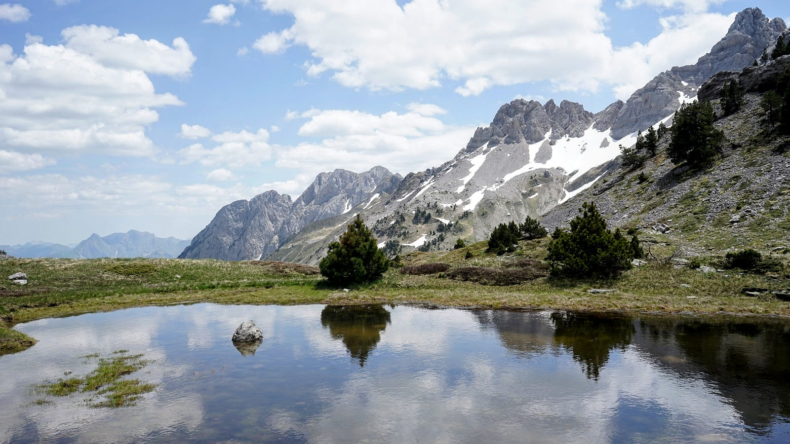
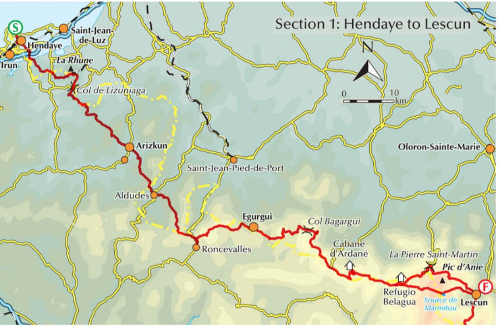
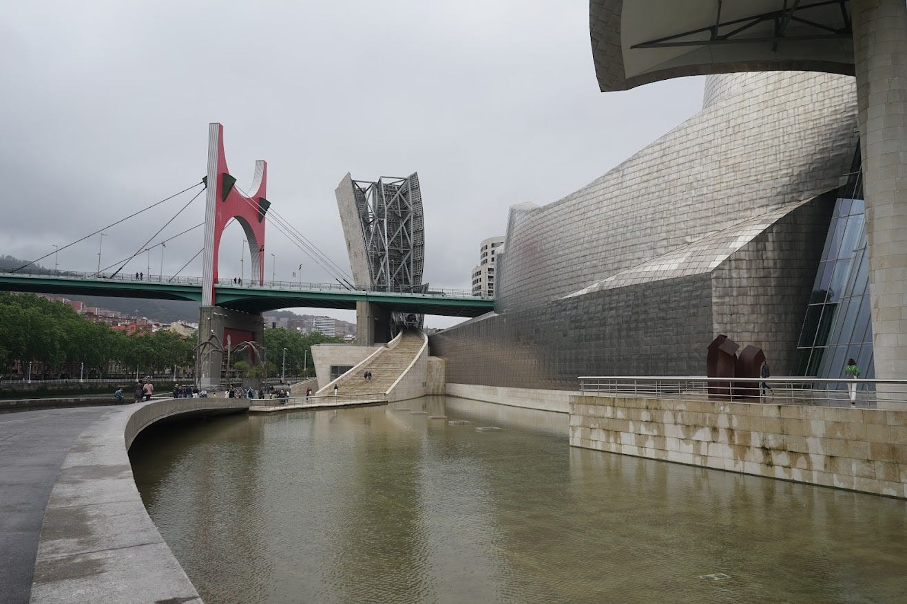
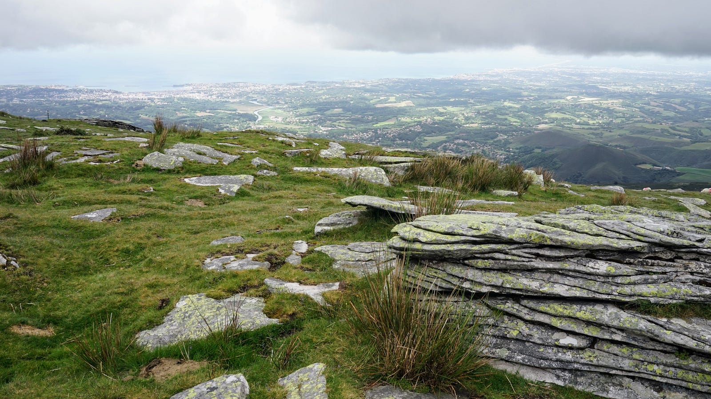
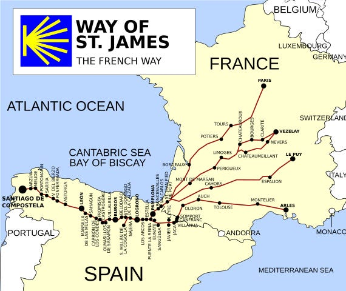
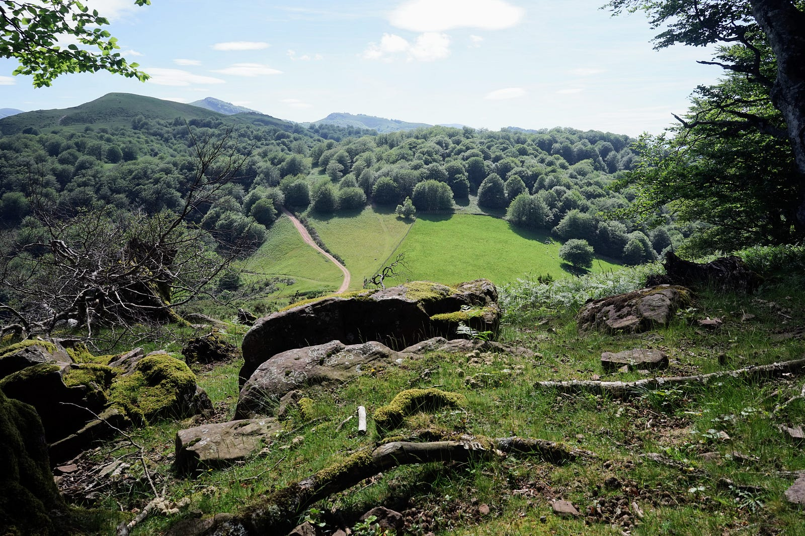
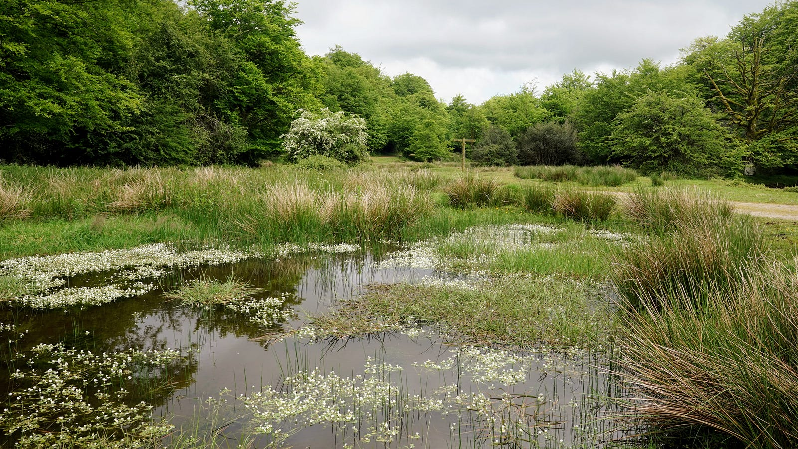
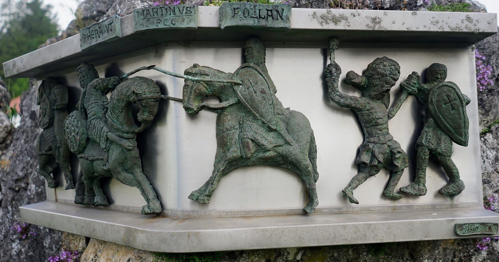
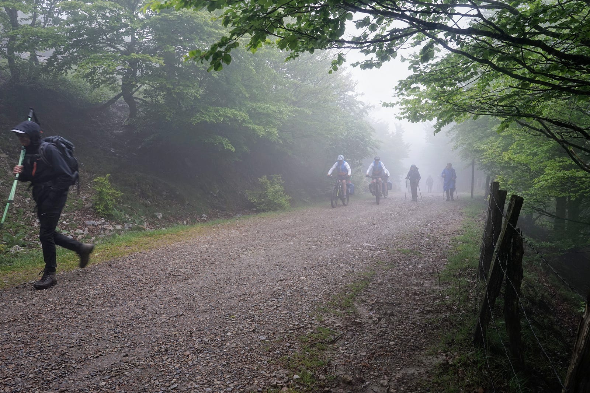
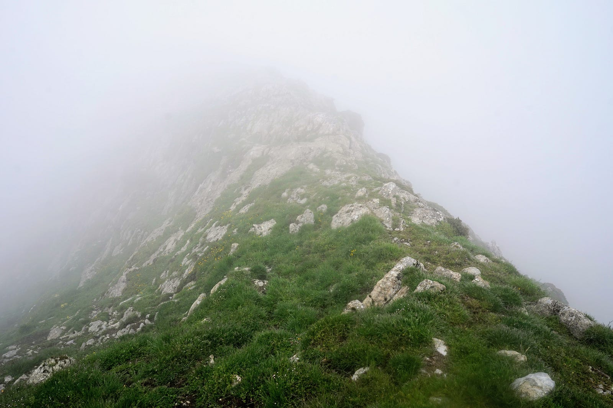

Walking from Hendaye to Lescun
Part one
Translated from the Polish original.

There are three trails that run the length of the Pyrenees. Two of them are official, marked with red and white stripes: the GR10 on the French side and the GR11 on the Spanish side. The third is the Haute Randonnée Pyrénéenne (HRP), which follows the highest part of the mountain range and often crosses the border. This is a virtual trail that has no dedicated signposting, although in many sections it follows paths belonging to other trails.

At the turn of May and June 2024, I set out on a trip to complete the first section of the HRP, from the French town of Hendaye, on the Atlantic coast near the Spanish border, to the village of Lescun in Nouvelle-Aquitaine. I had two weeks to complete the route, including the commute to Hendaye and back home.
Day zero: May 26
The journey begins with an early morning flight from Amsterdam to Bilbao. Since there is no way to get to the airport that early by public transit, I have to spend most of the night there. There is a lot of noise and bright lights, which makes it difficult to sleep, but at least the airport staff do not bother passengers lying around. The plane lands in Bilbao in the early afternoon, and a city bus takes me to the city centre. There, I will spend the night at the Quartier Bilbao hostel in the old town. This part of the city is made up of narrow streets, a town square in front of the cathedral, cafés and souvenir shops.
To the west of the old town there are several streets known for their tenement houses painted in colors. I take a few photos, but the architectural effect is somewhat spoiled by the cars parked on the street.

Then I walk along a wide avenue towards the Basilica of Begoña – it doesn’t make much of an impression on me, but I meet an elderly woman who, for some reason, asks in French if I’m French. I tell her I’m not, but she’s already decided that I’ll be useful to her anyway: she hands me religious pictures with French inscriptions, and convinces me (speaking in Spanish already) that I know French quite well, and that I can give the pictures to my friends. I shrug, thank her for the leaflets, and keep walking. Only after about ten minutes do I throw them in the bin with a slight sense of guilt.

It is interesting to walk along the Nervión River bisecting the city. By the river, there is the symbol of Bilbao, the Guggenheim Museum, a steel and glass building with undulating surfaces. I only see it from the outside. Inside, there is a collection of contemporary art, which I leave for another visit to Bilbao.
Then I wander along the river, crossing a few bridges and admiring the view. On a Sunday afternoon, the narrow streets of the old town and the wide boulevards of the newer part of town are quiet and uncrowded. The weather is what I expected: clouds and drizzle. In any case, the city seems worth another visit. After a few pintxos and a glass of wine in a bar in Plaza Nueva, I go to bed at the hostel. I am taking a bus early tomorrow morning to Hendaye, where my real journey begins.
Day one: May 27
The Blablacar bus is scheduled to leave the bus station at eight. It's about a half-hour walk from the hostel along deserted streets and boulevards. The days starts rather late in Spain, probably because the country uses the Central European time zone, but geographically it is on the western edge of the continent. I wander around the station building for a while, looking for bus stands—finally I find them underground. The ride will take two hours and forty minutes.
The bus drives along a highway that winds between the hills surrounding the city. After a while, it passes through the picturesque coastal town San Sebastian (Donostia).
Already at the border with France we pass through the port city of Irún, and right on the other side of the border the tourist town of Hendaye. From the bus stop I walk for a dozen or so minutes towards the sea. The first day of the HRP overlaps almost entirely with the GR10 trail, which passes through the beach in Hendaye. I start a few minutes after ten — from the sea I walk through the town and its suburbs to the east. The architecture is similar to that in most towns in the Basque Country: white-painted stone houses with red roofs. The trail continues through fields, villages. I cross two large roads, and after about two hours of walking I am already outside the built-up areas. The path now goes along the ridges of hills. I meet another hiker with a large backpack and we chat for a while: he is following the GR10 to the Mediterranean Sea. The conversation does not last long, because he only speaks French, and my knowledge of this language is a bit limited.

I continue along the crests of gentle green hills. Grazing shaggy goats attract the attention of a few day trippers who stop and take pictures – I join in. Further on, from the hillsides, I can see Hendaye and the nearby French Atlantic coast.

After another two hours of walking, the trail reaches the border (near Col D'Ibardin), where I find a restaurant and decide to stop for a coffee. Afterwards, while rummaging through my backpack, I realize that I no longer have the USB cable for my phone charger. This is a serious problem, because during the hike I use the OsmAnd app on my phone as a map, and I also use satellite navigation. I probably left the cable behind at the hostel, and without it my whole plan is in doubt. The restaurant has a small shop attached to it, where I go immediately to look for a new cable, without success. I also ask the waitress, who advises me to try the shops located a little further along the road. It turns out that there is a whole shopping complex there - prima facie it is an odd place for a shopping mall, but I guess it must be a remnant of the old customs border. The French used to come here, and still do, to stock up on cheaper Spanish products. This strange mountain relic of old Europe saves me, because in one of the shops I find a USB-C cable (the last one!) that fits my phone. A similar border trading town will come to my aid once more on this journey.
In the evening I reach the summit of La Rhune, where there is a cogwheel train from the French side. I can also see some buildings, probably a hotel or inn. I don't investigate it closely but continue looking for a place to camp. I put up my tent on a flat meadow near the boundary stone (mugarrien in Basque) number 29.
During the night I discover another problem: my air mattress is slowly but surely leaking air. I checked it before leaving, and I hadn’t noticed the problem, because it leaks very slowly. I don't see any obvious holes that I could try to patch. The mattress holds air for about an hour after it's inflated, then flattens out, and doesn't provide much insulation from the ground. I inflate it several times during the night, but eventually I give up and try to sleep on the hard surface of the flat mattress. The prospect of spending the next few days of the trek like this is not appealing.
Day two: May 28

In the morning, a few minutes before seven, I get up, and the view before me compensates for the inconveniences of the night. Below, to the south of my camp, a rippling sea of fog lies in the valley, and islands of higher hills protrude from it. I pack up, and set out to follow the trail down into those clouds.
After an hour or two of walking I reach Col de Lizarrieta, where I find a mountain inn. I stop there for a cheese baguette and a coffee. I also go online to look for a place to buy a new mattress or a sleeping mat. There is nothing nearby, but I see a sports shop on the map in the village of Dantxaria, about eighteen kilometers away. The HRP trail now leads south to Elizondo, and Dantxaria is to the east, so not exactly on the way. I decide to go there nevertheless, and sort out the mattress issue.
The first two hours of the route are along a mountain road, and then I walk another two hours along the French GR10 trail. I walk briskly so as not to waste too much time on this shopping trip. The day is hot and I am tired when I reach my destination. It turns out that Dantxaria is another border town filled with shops. The sports shop is in a large shopping mall. I buy a cheap sleeping pad there and take a break for a meal at a nearby restaurant. I charge my phone and call home to talk to my family.

It's about 5pm when I set out again. I follow the Way of Saint James (Camino de Santiago in Spanish ) towards Arizkún, where I'll rejoin the HRP. The Way of Saint James is a footpath that pilgrims take to Santiago de Compostela. The most popular route is the Camino Francés, which starts in Saint-Jean-Pied-de-Port in France, crosses the Pyrenees, and then goes through Pamplona, Logroño, Burgos and León, but there's a whole network of these routes in the Iberian Peninsula and all over Europe. In a few days my route will cross the Camino again, at the Roncesvalles pass.
After seven in the evening I find a small clearing in the forest and pitch my tent there for a bivouac. The workers repairing the forest road finish their work soon, and it becomes quiet and peaceful. Tonight I will sleep quite comfortably.
Day three: May 29
I wake up in the morning before seven and pack up my tent, which got wet during the night and must have gained an extra kilo. I continue on the Jacobean path. The path leads through the forest, then through meadows and fields. I pass through the charming Basque village of Amaiur / Maya. In this part of the Pyrenees places names are double: one name in Basque and the other in Spanish or French.

I now walk for a while through farmland, and arrive in Arizkún around noon. The town is nice but the bars and restaurants are still closed, so I sit on a wall in the shadow of the church and eat the supplies I carry in my backpack, which are bread, cheese, nuts and dried fruit.

The trail now heads southeast, toward the village of Aldudes, on the French side of the border. I walk through green hills, forests, and pastures. This part of the Pyrenees belongs to Navarre, which is now a Spanish autonomous community, but was once an important kingdom on both sides of the current border. To this day, one of the official titles of the King of Spain is Rey de Navarra. The municipality I am walking through is Baztán, known from the series of crime-thriller books (and films based on them) The Baztán Trilogy. These areas have been inhabited since prehistoric times, as evidenced by the megalithic tombs, or dolmens, that I encounter at every step.
I reach the Berderizko Pass on the border with France at around 5pm, and decide to end my hike for the day. I look for a place to camp: ideally it should be flat, but not right on the path. Finally I find a few square meters among thistles on a small hill.
An early camp has its advantages and disadvantages. On the one hand, it's good not to worry about finding a place to sleep in the evening, when the daylight and your own strength are running out. On the other hand, camps under the open sky are not very comfortable, and the evenings sometimes drag on. Today I kill time walking around the area and taking pictures of the landscape, as well as of the horses grazing in the meadows, which look exceptionally handsome in the glow of the setting sun.

Day four: May 30
In the morning the panorama is completely different: it is raining and cloudy, and visibility is getting worse and worse. As we will soon see, this is the face that the Western Pyrenees often show, sometimes for several days. I descend in this drizzle towards Aldudes.
In the village I plan to find a place to charge my phone. The church is open and I decide to check if there is electricity there. There is. I sit on a church pew and dry off, waiting for the battery to reach 100%. Then I go online and book a night at a hostel in Auritz/Burguete, about twenty kilometers from Aldudes. I will have to get there before 8 pm.

I leave the church and go to the village shop to stock up on food. Then I take a short break for a breakfast baguette with cheese and a coffee at a roadside inn.
I continue: now the path climbs again to the ridges of the hills. I pass through flower gardens, then fields full of hunting stands, then a completely deserted asphalt road. Signs for Roncesvalles (Roncevaux) appear.
Late afternoon I approach Auritz. The path descends through a grassy plain full of flowers. The path is occasionally crossed by a stream called Xuringoa ugaldea .

I arrive at the hostel at around 6 p.m. It is mainly pilgrims on their way to Santiago who spend the night here. Auritz is about three and a half kilometres from Roncesvalles, where there is a large monastery pilgrimage hostel, and those who didn’t manage to get a bed there end up here. Most people make the pilgrimage alone, and they are happy to strike up conversations in the hostels. I haven’t spoken to anyone for a few days, so I go to a nearby restaurant for dinner with a few pilgrims. The towns along the Way of Saint James often specialise in serving pilgrims on their way to Santiago. For example, restaurants serve cheap but complete pilgrim’s menus: for around 10 euros you can get a salad, a main course, a dessert and a glass of wine.
My dinner companions are an elderly woman from England, a boy from Germany, and a middle-aged man from Italy. They are all walking alone. They also have no religious motivations—this applies not only to these three, but to a large part of the pilgrims in general. For them, this walk is a personal challenge, and an opportunity to experience something a little different from ordinary everyday life, or a typical vacation. In other words, similar motivations to those that guide hikers on long-distance mountain trails.
After dinner I go for a stroll around the town, talk on the phone with my family, and then read a bit in the hostel's common room. At night I try to get my fill of sleep in comfortable bed: tomorrow I'm spending the night somewhere in the mountains again.
Day five: May 31
In the morning I go for coffee at the same restaurant where we had dinner yesterday. I have two cups. I also book a place to stay tomorrow at the Chalets de Iraty. I set off shortly after nine.
After half an hour I pass the village of Roncesvalles (Oreaga in Basque, Roncevaux in French). There is a monument here depicting the famous Battle of Roncevaux. In 778, Basque warriors defeated the rear guard of the retreating Frankish troops of Charlemagne here. Roland, the Frankish commander, was killed here, and his actions and the event became the basis for the epic poem Chanson de Roland.

This morning the trail follows the Way of Saint James, where pilgrims cross the Pyrenees from Saint-Jean-Pied-de-Port towards Roncesvalles. I take this route in the opposite direction, heading north, so I pass dozens, even hundreds of hikers who greet me with the pilgrim greeting ¡Buen camino! They are women and men, Europeans and Asians. Most are either retired or college-age.

The weather today is cool and misty. There is a lot of mud in the forest and a strong wind on the exposed passes, so the pilgrims begin their journey in challenging conditions.

At the border my path separates from the Way of Saint James and turns west. Now I don't meet a soul. I walk through impossibly green landscapes. The color of the plants contrasts with the milky atmosphere, and seems almost fluorescent. The bright grasses of the open meadows compete with the shiny moss covering the undergrowth and tree trunks in the forest.

I walk down a lush meadow, zigzagging down a steep slope, and this green, wet grass in today's conditions has another effect: my shoes are constantly soaked in water and there is no chance for them to dry.
In the afternoon the path leads along the ridges of hills. There is a lot of wind and the air is permeated with something intermediate between fog and drizzle. It is hard going, you can see little, and it is getting late. It is time to find a place to camp, and here there are steep slopes everywhere. I have not seen anyone since morning, and it seems that I am at the end of the world. However, this is not true, as I find out when, after eight in the evening, the wayward path crosses the top of the hill and on the other side I unexpectedly see an asphalt road and a few dwellings nearby. I continue along the valley, on the impossibly muddy bank of the river, but the terrain becomes flatter and I soon find a place to camp. I put up the tent and then take a long time to rinse my feet, pickled during the difficult day, in the cold water of the stream. Time for bed.
Day six: June 1
I get up at eight and pack up camp. Of course, my shoes and socks haven't dried overnight, but that doesn't matter, because there's plenty of wet grass around, so they'd get soaked in a few minutes anyway.
Today's HRP route mostly follows the GR10 on the French side of the border, and heads straight east. It is therefore well marked and presents no major difficulties. The weather is changeable, but there are patches of blue in the sky, which always makes the walk more enjoyable.
In the early afternoon the path meets a paved road—there is also an inn and a shepherd’s hut that advertises cheese for sale. I buy a quarter of sheep cheese wheel from the two women and their dog who run the place. Then I stop for a meal at Le Kayolar, an inn consisting of two cramped, low-ceilinged rooms with a few tables. I order an omelette with mushrooms, fries, and a bottle of cider. It all tastes great.
From here it's only five and a half kilometres to the refuge. On the way I meet another older man with a large backpack. I exchange a few words with him - he's following the GR10 trail, camping in the open air.
My accommodating of tonight is part of the Chalets d'Iraty tourist complex . They have cottages for rent, a restaurant, a shop, and this gîte d'étape, where I'll be spending the night. I check in at the reception, stock up on nuts, dried fruit, and bread at the shop, and walk a few hundred meters to the gîte. It turns out I have a whole double room all to myself: a luxury! I can also take a shower here, dry my shoes, and wash my socks and teeshirt.
There are two middle-aged Frenchmen in the refuge, who are hiking the GR10 trail, staying overnight in the refuges. This trail, it turns out, is very popular in France, and whenever the HRP joins it, you can always count on meeting other hikers.
In the evening I relax by the fireplace (although the fire often fizzles out) and sketch the plan for the next few days. Tomorrow I plan to spend the night in the Ardane mountain hut, and the day after tomorrow in the Belagua refuge, again on the Spanish side.
Day seven: June 2
I set off at eight and walk across grassy slopes. There are many narrow paths running parallel at different elevations. Sometimes they disappear, merge, or cross each other. Additionally, visibility is very poor, so it is difficult to stay on the trail. At nine-thirty I take a break for breakfast and enjoy the excellent cheese I bought yesterday from the shepherdesses.
Today I will reach the highest point of my hike: the Orhi peak, 2,017 meters above sea level. The approach leads along a sharp ridge called Zazpigain: in this spot of the Pyrenees, the sedimentary rock layers are almost vertical, so one walks as if on a knife’s edge. On both sides, there’s a steep precipice, although in the fog you can't really see how steep or deep it is. However, imagination fills in the details obscured by the weather.

The closer to the summit, the more the wind howls in my ears. I pull my hood over my head and walk slowly, carefully, step by step, but still making progress. I reach the summit at one thirty. There is a small white post here, and around it white emptiness. I take a few photos, a video, and then I take shelter from the gale by going a few steps down to the lee side of the ridge. I wonder what it looks like here on a sunny day.

Descending from the peak I lose my way a bit, back up, for the trail again; I succeed. After descending the mountain the path crosses a paved road. In the swirling fog a car is parked here. It always seems strange and unexpected to stumble upon civilization after several hours of lonely trudging walking through the wilderness.
I arrive at the Ardane hut after 5 p.m. It’s a barn with a table, a fireplace and platforms for sleeping. Not far away is the cottage of a shepherd who lives there during the sheep-grazing season. I’m busy lighting a fire when the shepherd drops by. He asks where I’m from and where I’m going. We chat for a while. He’s very impressed that I know a few words in Basque, such as agur (goodbye) and eskerrik asko (thank you). When he asks what my profession is, I say I work at the university, and he goes: Of course, I knew it!
After the shepherd leaves, I continue trying to keep the fire going, to dry out my things. But it’s not easy: there’s only a thick, twisted pine trunk to burn. With difficulty, I cut smaller, easier-to-ignite chunks out of it with my pocket knife. The fire burns for a while, but soon dies out, and I lose patience with it.
I eat something and go to sleep on the top bunk. During the night I am awakened by some scratching and crunching noises — it's mice getting at my provisions, which I unwisely left in a plastic bag on the table. They have already bitten through the bag, and are feasting on my nuts. I take the bag with me to the bunk: it will be harder for the mice to reach here.
To be continued…